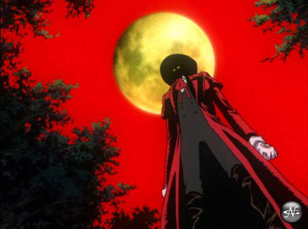

The regular moon is ok, but the harvest moon is cool. If you love the moon thats cool, so come hang out with us and talk about stuff and things like the moon landings, and other stuff like UNIX. Lunaphiles St. Louis is the St. Louis, MO chapter of the Lunaphiles organization, which is dedicated to all things having to do with the moon, and cookies. If you are looking for some people with a telescope and cookies to share, then you've come to the right place (no cookie monsters allowed). Originally, our slogan was We're looney for the moony, but once we realized how bad it was, we changed our slogan to The Cake is a Lie; don't question our new slogan, its true.
